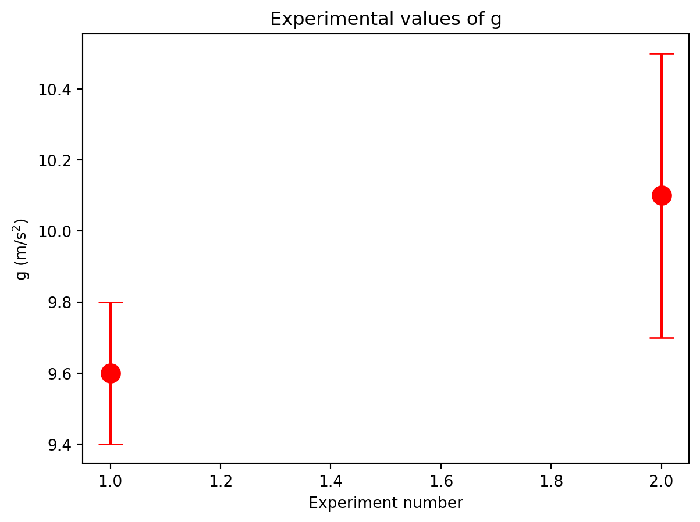

Lab 1: Measurement and Uncertainty
Introduction to Error Analysis
Name:
Skills
In this lab you will gain the following skills..
- Use Python to perform simple calculations.
- Use formatted print statements in Python to display results.
- Use Python to make a simple plot, including error bars.
- Take measurements and assign uncertainties.
- Propagate uncertainties for simple calculations.
- Understand the difference between precision and accuracy.
- Calculate percent error and explain its experimental significance.
- Calculate fractional uncertainty and explain its experimental significance.
- Correctly display results with their associated uncertainty.
- Understand the role of significant figures for communicating uncertainties.
Background Information
An Historical Example
In 1826, J.K.F Sturm and J.D. Collandon designed an experiment to calculate the speed of sound in seawater. The two men sat in boats separated by 16 kilometers. A bell was suspended in the lake from Sturm’s boat which could be struck by a hammer that was operated by Sturm at the surface. At the exact moment that the hammer struck the bell it also ignited some gun powder which produced an above-water flash. An underwater ear-trumpet was suspended from Collandon’s boat to receive the sound wave emitted by the bell. By measuring the time difference between the flash and the bell’s tone, the scientists were able to calculate the speed of sound to be \(1435\) m/s, which was remarkably close to the modern value of \(1438\) m/s.

If this experiment had been repeated many times the results would have been slightly different every time. This is because experiments always involve measurements, and measurements always have some variability (or uncertainty) associated with them. For example, to measure the difference in time between the bell and the flash involves the use of a watch and a human to operate that watch. A simple analog watch may be able to measure to the nearest second or maybe half second but no smaller. Typical reaction times for humans varies between \(0.17\) s (audio stimulus) and \(0.25\) s (visual stimulus). Another important measurement that would surely have some variation is the distance between the boats (reported to be \(16\) km). Variations in the water temperature and pressure could also change the true value of the speed of sound and therefore make the time measurements differ. Although there is only one true value for the speed of sound in fresh water (at a given temperature and pressure) multiple measurements of this quantity will never be identical. This is represented in the figure below, which is an example of what multiple measurements of the speed of sound may have looked like for Sturm and Collandon. Each vertical bar gives the number of times that the measured speed of sound occurred at that value.
As with the speed of sound experiment, every scientific experiment performed will have measurements, and those measurements will always have variability (or uncertainty) associated with them. In this lab (and several others) we will get practice taking measurements, assigning uncertainty to those measurements, and correctly reporting the uncertainty of calculations.
Uncertainties in Measurements
Measuring involves the use of a measuring device of some sort, such as a ruler, balance, microphone, voltmeter, or any other sensor. When measuring a physical property of an object, we assume that there is a unique “correct” value for this measurement. The problem is that we can never measure this “correct” value because no instrument is perfectly precise and no experiment is free from variability. We have to make do with the goal of getting as close as we can to the “correct” value and doing our best to accurately state the uncertainty.
There are several factors that affect your ability to perform experiments with perfect precision:
- Limited accuracy of measuring devices.
- Calibration of measuring devices
- Changes in physical conditions of experiment
- Simplification of experiment. (e.g. Neglecting small but not negligible forces)
Analog Measurements
All measuring devices fall into one of two categories: analog and digital. Analog devices usually have a set of tick marks and a scale printed on them. Meter sticks, spring scales, calipers, multimeters (comes in both analog and digital) are all examples of analog devices. Digital devices display the measurement on an electronic display. Both types of devices have uncertainty associated with them.
Consider the example shown in figure below where we use a meter stick to measure the length of a rod. If you look close, you’ll notice that the end of the rod falls between the tick marks on the meter stick. Such will almost always be the case. If you were to look really close, you’d notice that the tick marks themselves have finite width. Therefore, even if the end of the rod landed on a tick mark, you still wouldn’t know which part of the tick mark it was. Every instrument is limited to some degree in this way.

So we can never really know the true length of the rod, or the true value of any other measurement. The best we can do is to provide a range of values that we are sure will include the true value. In this example, a range of \((97.6-97.7)\) would certainly include the correct value, but this range is probably too broad. On the other hand, choosing a range of \((97.64-97.66)\) might be too small so as to not actually include the true value. The correct length is probably \(97.65\) with a certainty range of \((97.62-97.68)\). Another way to say that is to report \[l = 97.65 \pm .03 \mathrm{~~cm}\]
In this case, \(97.65\) cm is the measured value and \(.03\) cm is the uncertainty associated with it. Uncertainties are always rounded to one significant figure and the measured value is rounded to the same decimal place as the uncertainty. It is critical in experimental science that every measurement is reported with an uncertainty value. The number alone is useless without knowing the possible range of values that it falls within.
Digital Measurements
Measurements made from digital devices will carry uncertainty too. This uncertainty arises because the device must round the measurement so that it fits on the digital readout. Uncertainty arises since you can never know what the next digit would have been. For example, suppose that you measure the mass of an object on a digital scale and it reads \(10.55\) kg. The actual value of the measurement could have been as low as \(10.545\) kg or as high as \(10.555\) kg. Anything in that range would have rounded to \(10.55\) kg. Hence, the uncertainty on this measurement is \(\pm 0.005\) kg. This measurement would be reported as \(10.55 \pm .005\) kg. Unless otherwise stated on the device, the uncertainty of a digital measurement is half of the value of the last decimal place shown.
Other Sources of Uncertainty
Sometimes the biggest source of uncertainty in a measurement is not due to the instrument itself but the experimental setup. For example, if a digital timer is used to time the drop of a tennis ball, the reaction time of the person operating the timer will be bigger than the explicit uncertainty in the timer itself. (For reference, the typical reaction time for auditory stimuli is \(0.14 - 0.16\) s and \(0.18 - 0.2\) for visual stimuli.) The placement of a meter stick may vary from measurement to measurement due to human variability and this would introduce some variability in the subsequent measurements. Fluctuations in the environmental conditions (temperature, pressure, etc) can cause variability in measurements. All of these factors must be considered when assigning uncertainties to measured values.
Precision vs. Accuracy
In science, we use two terms that often can cause confusion, since in everyday language they tend to be synonymous. They are precision and accuracy. Precision is a measure of the uncertainty in a measurement. In other words, high precision means low uncertainty. Accuracy, on the other hand, means a measurement agrees well with an accepted standard. The figure below illustrates the concept of precision vs. accuracy when throwing darts at a dartboard.
When all of your measurements are offset from the true value (blue dots in the figure) we call it a systematic error. An example of a systematic error would be using a measuring tape on a hot day. Because the length of the measuring tape has thermally expanded, any measurements taken will be smaller than they should be. There is no way to detect a systematic error by simply gathering data; you must uncover it based on the experimental circumstances.

Fractional Uncertainty
One way to express precision is as a fractional uncertainty:
\[\begin{align} \mathrm{fractional ~ uncertainty} &= \frac{\mathrm{uncertainty}}{\mathrm{measured ~value}} \end{align}\]
Fractional uncertainty are dimensionless quantities that describe how large the uncertainty is compared to the measurement. They serve as a rough indication of the quality of the measurement. Fractional uncertainties of \(10\%\) or so are usually characteristic of rough measurements. (Think about measuring the length of a 10 cm object and assigning an uncertainty of 1 cm.. It’s not super great, but not terrible either). Fractional uncertainties of \(1\%\) of \(2\%\) are characteristic of reasonably careful measurements and are about the best we can hope for in any lab that we do. Fractional uncertainties less that \(1\%\) will be difficult to achieve in an introductory lab setting.
Percent Error
Accuracy is often expressed as a percentage error. There are slightly different ways of defining and using percentage error, depending on which scientific field you are in. In this course we will define percentage error as
\[\mathrm{\% ~error}=\frac{(\mathrm{measured~ value}) - (\mathrm{theoretical~value})}{(\mathrm{theoretical ~ value})}\]
The sign of the percentage error then has meaning: a negative percent error means the measured value is less than the theoretical or accepted value, and a positive percent error means the measured value is larger then the theoretical value. High accuracy is reflected by a low percentage error.
Judging the success of an experiment
A comparison of the fractional uncertainty and percent error determines whether the experimental result is consistent with the hypothesis (or known quantity). If the percentage error is smaller than the fractional uncertainty, the experiment is judged to be a success since the true value falls within the uncertainty of the result. For example, suppose an experiment to determine the acceleration due to gravity results in \(9.86 \pm .03\) m/s\(^2\). The fractional uncertainty would be
\[\mathrm{fractional~ uncertainty} = \frac{0.03}{9.86} = 0.0030 = 0.3 \%\] while the percentage error compared to the accepted value of \(9.80\) m/s\(^2\) would be \[\mathrm{\% ~error} = \frac{9.86 ~\mathrm{m}/\mathrm{s}^{2}-9.80~ \mathrm{m}/\mathrm{s}^{2}}{9.80~ \mathrm{m}/\mathrm{s}^{2}} = 0.0061 = 0.61\%\] Since the percent error is larger than the fractional uncertainty we would claim that our experiment did not successfully confirm the widely accepted value of \(g\). In this case, the scientists should look for possible systematic errors or underestimated uncertainties in the experiment before proceeding.
Conversely, suppose the measurement of the acceleration due to gravity resulted in the experimental value of \(10 \pm 2\) m/s\(^2\). The fractional uncertainty is \(20\%\) and the percent error is \(2.0\%\). We could conclude that the experiment successfully confirmed the value of \(g\). Your goal in any measurement should be to obtain both accuracy and precision.
Displaying Results with Uncertainty
Often it will be valuable to produce a visual representation of your value with its uncertainty. As an example, imagine that you and a friend each performed an experiment to measure the acceleration due to gravity and you’d like to compare your results visually. If the results of the two experiments were \[g = 9.6 \pm 0.3 ~\text{m/s}^2\] \[g = 10.1 \pm 0.2 ~\text{m/s}^2\] you could use Python to plot these two measurements with their uncertainties like this
from matplotlib.pyplot import errorbar,show,xticks,plot
x = [2,3]
y = [9.6,10.1]
dy = [0.3,0.2]
errorbar(x,y,yerr = dy,capsize = 10,marker = "o",linewidth = 2,capthick = 2,ls = 'none',xticks = None)
plot([0,4],[9.8,9.8],ls = 'dashed')
xticks([],[])
show()In this case, the measurement whose uncertainty window contains the accepted value could claim a successful experiment, while the other measurement could not.
Significant Figures
At this point, you may be wondering about all of those numbers in your physics textbook that are given to you without any \(\pm\) value attached to them. In the absence of an explicitly-stated uncertainty, it is generally assumed that the uncertainty is \(\pm 5\) on the digit that is one beyond the least significant digit. For example, if your homework problem states that a car was traveling with speed \(25\) m/s, it is implied that the uncertainty on that length is \(\pm 0.5\) m/s. After all, if the true value were anywhere in the range \((24.5 - 25.5)\), we would have rounded the final answer to \(25\) m/s.
The numbers used to communicate the precision of a measurement are called significant figures. The rules for tracking and reporting of significant figures that you learn in physics and chemistry class are a quick and dirty way to keep track of these uncertainties as they are used to perform calculations. They ensure that the implied uncertainty in a calculated value is not wildly incongruent with the uncertainty in the data provided.
However, using significant figures to communicate uncertainty does have it’s drawbacks. For example, let’s say that you measure the length of a rod and determine that lies in the range \((10.5 - 10.6)\) cm. In other words, you would report the length of the rod to be \(10.55 \pm .05\) cm. You can’t communicate this uncertainty using significant figures. If you report the length to be \(10.5\) cm, you’re implying that the actual value is somewhere in the range of \((10.45 - 10.55)\) which isn’t the correct window. If you report the length to be \(10.55\) cm, you’re implying that the value is somewhere in the range \((10.545 - 10.555)\) cm, which is too narrow. We use significant figures because it’s easy and it communicates an uncertainty that is close, but not perfect.
The number of significant figures that a number has is an indication of its fractional uncertainty. For example, if you report your mass to be \(m = 75\) kg, you are implying an uncertainty of \(\pm .5\) and thus a fractional uncertainty of \({.5 \over 75} = 0.7\%\). But if you report your mass to be \(m = 75.1\) kg you are implying an uncertainty of \(\pm .05\) and thus a fractional uncertainty of \({.05 \over 75} = 0.07\%\). Roughly speaking for each significant figure that is gained the fractional uncertainty decreases by an order of magnitude. Below you will find a table with approximate correspondence between fractional uncertainties and significant figures.
| Number of significant figures | Fractional Uncertainty |
|---|---|
| 1 | \(10\%\) — \(50\%\) |
| 2 | \(1\%\) — \(10\%\) |
| 3 | \(0.1\%\) — \(1\%\) |
Combining Uncertainties
Often we will need to use measured values, with their associated uncertainties, to calculate another value. For example, let’s say we measure the dimensions of a square plate to be: \(l = 10.2 \pm 0.3\) cm and \(w = 18.3 \pm 5\) cm. Next, we calculate the area to be:
\[A = l\times w = 10.2 \times 18.3 = 186.66 ~\mathrm{cm}^2\].
What is the uncertainty in the area? In other words, how does the uncertainty in the measurements propagate through the calculation to the uncertainty in the area?
One way to answer this question is to simply ask, ““What is the maximum and minimum values of the area?”“. As you probably could have guessed, the maximum possible value for the area is
\[A_\mathrm{max} = 10.5 \times 18.8 = 197.4 ~\mathrm{cm}^2\]
and the minimum possible value is \[A_\mathrm{min} = 9.9 \times 17.8 = 176.22 ~\mathrm{cm}^2\] .
Therefore, the actual value of the area must be somewhere between \(176.22\) cm\(^2\) and \(197.4\) cm\(^2\) (a range of \(20\) cm\(^2\)) and we could report the area as: \[A = 187 \pm 10 ~\mathrm{cm}\]
The high-low method is great at illustrating how measurement errors can affect results, but should never be used in a professional setting.
The algebraic method (no Calculus yet!)
Using algebra, we can develop rules for combining uncertainty when multiplying, dividing, adding, subtracting, or raising variables to whole number powers. These rules will cover many simple situations, but eventually we will need to know how to estimate uncertainty for any function as will be covered in a future lab. For now our goal is to have a method that you can use without calculus.
| Function | Calculation | Uncertainty Formula |
|---|---|---|
| Addition | \(z = x + y\) | \(\delta z^2 = \delta x^2 + \delta y^2\) |
| Subtraction | \(z = x - y\) | \(\delta z^2 = \delta x^2 + \delta y^2\) |
| Multiplication | \(z = xy\) | \(({\delta z\over z})^2 = ({\delta x \over x})^2 + ({\delta y \over y})^2\) |
| Division | \(z = {x\over y}\) | \(({\delta z\over z})^2 = ({\delta x \over x})^2 + ({\delta y \over y})^2\) |
| Multiply by Constant | \(z = Ax\) | \(\delta z = A\delta x\) |
| Powers | \(z = x^n\) | \({\delta z\over |z|} = n{\delta x \over |x|}\) |
Using these rules on the example from above, we would find the following uncertainty in the area of the plate. \[\begin{align*} {\delta A\over A} &= \sqrt{{\delta l\over l}^2 + {\delta w \over w}^2}\\ &= \delta A = A \sqrt{({\delta l\over l})^2 + ({\delta w \over w})^2}\\ &= (10.2 ~\text{cm})(18.3 ~\text{cm}) \sqrt{{(0.3 ~\text{cm})\over (10.2 ~\text{cm})}^2 + {(0.5 ~\text{cm}) \over (18.3 ~\text{cm})}^2}\\ &= 7.5 ~\text{cm}^2\\ &= 8 ~\text{(rounded to 1 sig fig)} \end{align*}\]
And the final result would be reported as \(187 \pm 8\) cm\(^2\).
These uncertainty formulas can be used for more complex calculations by applying multiple formulas to different parts of the expression. For example, suppose you wanted to perform the following calculation with its associated uncertainty:
\[ f = b + a x^2\]
where
\[b = 5.1 \pm 0.2\] \[a = 1.8 \pm 0.1\] \[x = 3.92 \pm 0.05\]
We can first apply the rule for addition from the table:
\[\delta f^2 = \delta b^2 + \delta(ax^2)^2\]
and then use the rule for powers to calculate \(\delta(ax^2)\): \[\delta(ax^2) = a \delta(x^2) = 2 |x|a \delta x\]
and then insert the second expression into the first to get an expression for the uncertainty on \(\delta f\): \[\delta f^2 = \delta b^2 + (2 |x|a \delta x)^2\]
Here is how we could make python perform the calculation.
from numpy import sqrt
b = 5.1
db = 0.2
a = 1.8
da = 0.1
x = 3.92
dx = 0.05
f = b + a * x**2
df = sqrt(db**2+ (2 * x * a * dx)**2)
print(f"f = {f:5.1f} +- {df:0.1f}")f = 32.8 +- 0.7Python Skills
Simple Calculations
In this lab you will need to perform simple calculations in Python. When performing mathematical operations, it is often desirable to store the values in variables for later use instead of manually typing them back in each time you need to use them. This will reduce effort because small changes to variables can automatically propagate through your calculations.
Attaching a value to a variable is called assignment and is performed using the equal sign (=), as demonstrated in the cell below:
a = 5.0
b = 3
c = a + bBig Numbers
Sometimes you find yourself working with large numbers in your calculation. Maybe your calculation involves the use of ten billion, which has 10 zeros in it. It can be difficult to look at all of those zeros with no commas to help break it up. In those cases, you can use an underscore (_) in place of the comma, as shown below.
myLargeNumber = 10000000000 # This is tough to look at.
myLargeNumber = 10_000_000_000 # This is easy to read
myLargeFloat = 5000000.6 # This is tough to read
myLargeFloat = 5_000_000.6 # This is easy to readIf your number is very large or very small ( \(20-30\) zeros), you would probably rather not have to type all of the zeros at all, even if you can break it up with the underscores. For example, the Boltzmann constant, which comes up in thermodynamics, has a value equal to
\[ 1.38 \times 10^{-23}~{\text{m}^2~ \text{kg}\over \text{s}^2~ K} \]
We can avoid typing all those zeros by using scientific notation when defining the variable. (see example below) This is super handy for very large and very small numbers. (Numbers of both variety show up frequently in physics!)
kB = 1.38e-23Mathematical Calculations
Most mathematical calculations that you’ll want to perform are straightforward. Use plus (+) to add, minus (-) to subtract, slash (/) to divide and asterisk (*) to multiply. There are a few other mathematical operations that are not as straightforward. Some of these are shown below.
a = 20
b = 10
c = a + b # Add
d = a/b # Divide
r = a//b # Integer Division
r = a % b # Remainder Division
e = a * b
f = c**4 # Raise a number to a power.Python functions
In addition to basic mathematical functions, python contains several mathematical functions. As in mathematics, a function has a name (e.g. f) and the arguments are placed inside of the parenthesis after the name. The argument is any value or piece of information fed into the function. In the case below, f requires a single argument x. \[f(x)\]
In the cell below, you will find several useful Python functions.
abs(-5.5)
float(2)
int(5.6)
print(1.26e-6)
round(-5.51)
str(3.2)In addition to Python’s native collection of mathematical functions, there is also a numpy module (pronounced “num-pie”, short for numerical python) with more mathematical functions. Think of a module as an add-on or tool pack for Python just like a library. The numpy module comes with every installation of python and can be imported (i.e. activated) using the import numpy as np command. After the module has been imported, any function in the module is called using np.function() where function is the name of the function. Here is a list of commonly-used functions inside the numpy module:
import numpy as np
np.sqrt(4)
np.ceil(4.3)
np.cos(1.5)
np.sin(1.5)
np.tan(3.14)
np.arcsin(1)
np.arccos(1/2)
np.arctan(2)
np.degrees(6.28)
np.e
np.exp(5)
np.log(200)
np.log10(1000)
np.radians(360)
np.piDisplaying Results
Python won’t display the result of a calculation unless it is told to. To tell python to display a result, you should use the print command. Often you will want to print a sentence with the value of a variable inserted at the appropriate place. This is done using something called an “f”-string. (short for formatted strings). To construct an f-string, simply place an “f” in front of the string. Anytime you want to insert a number in your string, enclose it in curly braces.
v = 5.0
c = 3e8
print(f"The speed of light is {c} m/s and the speed of my car is {v} m/s")The speed of light is 300000000.0 m/s and the speed of my car is 5.0 m/sThat’s a clever way to insert a numerical value into a string, but the value of the speed of light is still displaying too many digits. To specify how the number should be formatted place a : after the variable name followed by a formatting tag.
v1 = 5.0
v2 = 8.3
c = 2.998e8
n = 2
print(f"There are {n:d} cars traveling side by side. One car is traveling at {v1:4.2f} m/s and the other is traveling at {v2:4.2f} m/s. Those speeds are much smaller than the speed of light, which is {c:.2e} m/s") There are 2 cars traveling side by side. One car is traveling at 5.00 m/s and the other is traveling at 8.30 m/s. Those speeds are much smaller than the speed of light, which is 3.00e+08 m/sThe structure of the stuff inside of the curly braces is {variable:formatcode}; variable holds the value to be displayed and formatcode indicates how the variable should be formatted when it is printed. The f in :4.2f indicates that the variable should be displayed as a float and the 4.2 indicates that four spaces should be allocated to display the number and no more than 2 numbers after the decimal should be displayed. A selection of some commonly-used format codes is given below.
| format code | explanation |
|---|---|
{variable} |
Use the default format for the data type. |
{variable:4d} |
Display as an integer, allocating 4 spaces for it. |
{variable:.4f} |
Display as a float, with four numbers after the decimal being displayed. |
{variable:8.4f} |
Display as a float, allocating 8 total spaces and 4 numbers after the decimal place. |
{variable:8.4e} |
Display using scientific notation, allocating 8 total spaces and 4 numbers after the decimal place. |
{variable:6s} |
Display as a string, allocating 6 total spaces for it. If the string is longer than 6 spaces, it will display the entire string with no extra white space. If the string is shorter than 6 spaces, it will pad the string with whitespace until it is 6 spaces long. |
Errorbar Plots
In this lab you’ll need to plot a small number of data points with error bars attached to them to indicate their associated uncertainties. To make a plot you’ll need to use a module called matplotlib. More specifically, you must import the pyplot function inside of matplotlib. It is customary to use plt as an alias for pyplot, as shown below.
from matplotlib import pyplot as plt
%matplotlib inlineTo make plots with error bars use matplotlilb’s errorbar function. This function has two required arguments: a list of the points’ x-coordinates and a list of the points’ y-coordinates. (A list is created using square brackets in python ([]) ) You can choose to add error bars on the x or y axis using the keyword arguments xerr and yerr. For example, if two measurements of \(g\) were taken with their uncertainties, a plot of their values with errorbars can be produced like this:
from matplotlib import pyplot as plt
%matplotlib inline
x = [1,2] # Just use 1 and 2 to give the two points some separation
g = [9.7,10.2]
y_error = [0.2,0.4] # Different error for each point
plt.errorbar(x,y, fmt = 'ro',markersize = 12,yerr=y_error,capsize = 8)
plt.title("Experimental values of g")
plt.xlabel("Experiment number")
plt.ylabel(r"g (m/s$^2$)")Text(0, 0.5, 'g (m/s$^2$)')
Several optional arguments can also be used to control the look of the plot. These optional arguments are summarized in the table below:
| Argument | Description |
|---|---|
fmt |
format string specifying color and shape of marker |
markersize or ms |
marker size |
capsize |
width of the cap on the error bar |
For a comprehensive list of allowed format string to use with the fmt argument see the section entitled “Format Strings” here
Markdown Tables
Tables are often useful for presenting data. You can make a table in a jupyter notebook using the following syntax
|t (s) | v (m/s) |
|------------|-------------|
| 0 | 10 |
| 1.2 | 22 |
| 2.3 | 25 |
| 3.0 | 38 |
| 5.5 | 56 |which will generate the following table:
| t (s) | v (m/s) |
|---|---|
| 0 | 10 |
| 1.2 | 22 |
| 2.3 | 25 |
| 3.0 | 38 |
| 5.5 | 56 |
Lab Activity I (50 pts)
Equipment:
- Metal block and cylinder
- Balance scale.
- Caliper or ruler.
Goal:
You will be given a metal block and a metal cylinder. Both objects are made of the same material. You will be allowed to measure the dimensions and mass of the cylinder but only the dimensions of the block. Your goal is to accurately predict the mass of the block with its associated uncertainty. If the true mass of the block falls within your uncertainty window, the experiment is a success.
Important: You cannot directly measure the mass of the block. The instructor will take this measurement.
Procedure:
Carefully follow the steps below to accomplish your task (No calculators allowed. All calculations must be performed in Python!!)
Calculate Density of Cylinder (15 points)
- Using the caliper, measure the dimensions of the metal cylinder. Enter the values and the uncertainties into the code cell provided below.
- Assign uncertainties to the measurements made in step one and record those uncertainties in the code cell provided below.
- Using the mechanical balance, measure the mass of the cylinder.
- Assign an uncertainty to the mass measurment and record it in the code cell given below.
- Calculate the volume of the cylinder (in units of cm\(^3\)) in the code cell below.
- Calculate the uncertainty in the volume of the cylinder.
- Calculate the density of the cylinder in units of g/cm\(^3\). Note: \(\rho = {m \over V}\)
- Calculate the uncertainty in the density of the cylinder.
- Use a formatted print statement to display the density of the the cylinder with its associated uncertainty.
Calculate the Volume of the Block (15 points)
- Using the caliper, measure the dimensions of the metal block. Enter the values in the code cell below.
- Assign uncertainties to the measurements you made and record them in the code cell below.
- Calculate the volume of the block (in units of cm\(^3\)) in the code cell below.
- Calculate the uncertainty in the volume of the block.
Calculate the Mass of the Block (10 points)
- Calculate the mass of the block using \(\rho = {m \over V}\) in units of g/cm\(^3\).
- Calculate the uncertainty in the mass of the block.
- Calculate the fractional uncertainty in the mass of the block.
- Use a formatted print statement to display the predicted mass of the block with its associated uncertainty.
Compare to True Value (10 pts)
- Have the teacher or a TA measure the mass of the block to compare against your calculation. Assign the uncertainty in this measurement to be the same as when you measured the mass of the cylinder.
- Calculate the percentage error for your prediction.
- Modify the table below to include your results for this experiment.
Conclusion: Does your calculation agree with the true value to within the stated uncertainty?
Results
Quantity Value Density of Cylinder (with uncertainty): __ +- __ Predicted mass of block (with uncertainty): __ +- __ Actual mass of block (with uncertainty): __ +- __ Percent Error: —
from pylab import *
%matplotlib inline
# Enter values for cylinder diameter, height, and mass. Give estimates of the uncertainties.
d = # diameter of cylinder in cm
un_d = # uncertainty of cylinder diameter in cm
h = # height of cylinder in cm
un_h = # uncertainty of cylinder height in cm
m = # mass of cylinder in gm
un_m = # uncertainty of cylinder mass in gm
# Calculate and print the density and its uncertainty
V = # Use equations above to calculate volume of cylinder
un_V = # Use equation above to calculate uncertainty in volume
rho = # Use equation above to calculate density of cylinder
un_rho = # Use equation above to calculate uncertainty in density
# Use a formatted print statement to display your density with its uncertainty. (include the units.)
# Block dimensions
l = # length of the block in cm
un_l = # uncertainty of the length of the block in cm
w = # width of the block in cm
un_w = # uncertainty of the width of the block in cm
h_b = # height of the block in cm
un_h_b = # uncertainty of the height of the block in cm
# Compute volume of block with uncertainty
V_b = # Calculate volume of block
un_V_b = # Calculate uncertainty in volume (can you figure it out from looking at the equation for the cylinder?)
# Compute predicted mass of block
m_b = # Use previously-calculate density to calculate mass of the block
un_m_b = #Calculate the uncertainty in the mass
# Use a formatted print statement to display your predicted mass with its uncertainty. (include the units.)Activity II (50 points)
Equipment:
- Flexible measuring tape.
- Meter stick.
Goal:
Calculate the volume of this room with its associated uncertainty. Compare your results with classmates.
Procedure:
- Using the flexible measuring tape, measure the length and width of this room. Using the meter stick, measure the height of this room. Assign uncertainties to all of these measurements. Record your values as variable in the code cell provided below.
- In the code cell below, calculate the volume of the room.
- Calculate the uncertainty in the volume in the code cell below.
- Calculate the fractional uncertainty in the room as a percentage.
- Use a formatted print statement to display the volume of the room with its associated uncertainty.
- Compare your results with the other groups in class. Enter their volumes (and yours) along with their uncertainties (and yours) in the cell provided below.
- Collect volumes (with uncertainties) for the other groups in the class and make an errorbar plot of all groups’ measurements with their uncertainties.
- Label your axes and put a title on your plot.
- Is your answer consistent with those of the other groups? If not, explain why it isn’t.
Response:
# Room dimensions
lr = # length of the room in m
un_lr = # uncertainty of the length of the room in m
wr = # width of the room in m
un_wr = # uncertainty of the width of the room in m
hr = # height of the room in m
un_hr = # uncertainty of the height of the room in m
# Compute volume of the room with uncertainty
V_r = # Compute the volume of the room
un_V_r = # Compute the uncertainty in the volume.
# Add a formatted print statement to display the volume with its uncertainty.
# Make error bar plot of all groups volumes here